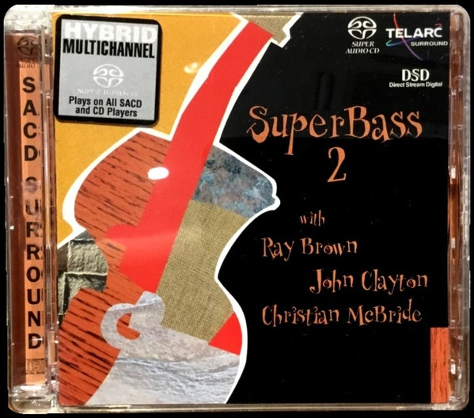

SACD
SuperBass 2
Ray Brown / John Clayton / Christian McBride
Media: NM · Sleeve: NM
CA$60.00
Sold
Discogs SuggestedCA$82.74
Discogs MedianCA$82.74
Discogs HighCA$82.74
- Physical Copy ID
- BB-SACD-170
- Year
- 2001
- Label
- Telarc
- Catalog #
- SACD-63483
- Country
- USUS
- Genre / Style
- Jazz · Bop, Post Bop